Field operations, national hackathons, and leadership away from the keyboard.
// AGNES AI HACKATHON @ SMU 2026 · CHAMPION
FitZ: Generative Multi-Modal Wardrobe Assistant
🥇 1st Place National Champion · June 2026
Built under an intense 48-hour sprint at Singapore Management University, FitZ was engineered to solve physical fashion fatigue by marrying generative multi-modal AI with real-time wardrobe cataloging.
Engineered automated garment segmenting, intelligent style recombination algorithms, and prompt-based outfit generation, pitching live in front of industry judges and securing 1st Place Champion against top university teams from across Singapore.
Agnes AI Hackathon 2026 · 1st Place Champions on Stage
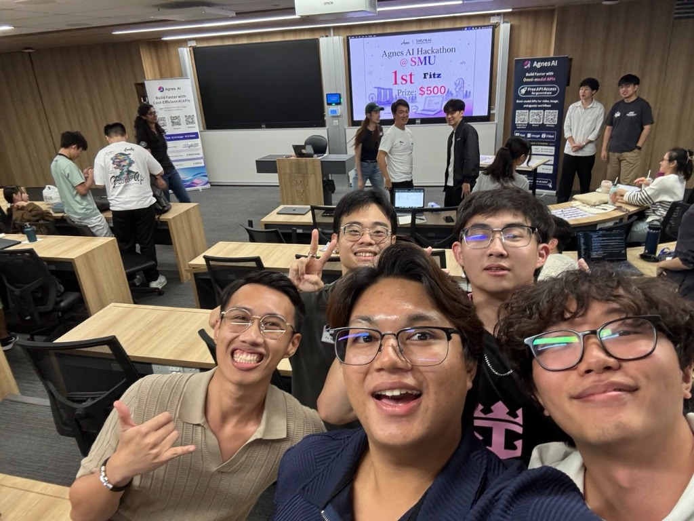
Team FitZ · Post-Pitch Victory Celebration at SMU
“Transforming digital wardrobe management from static photo grids into an intelligent generative styling assistant.”
SMU AGNES AI HACKATHON 2026 · 1ST PLACE WINNER
// NEBULA X HACKATHON 2026 (LTA & NUS) · RUNNER-UP
Designed in direct response to Land Transport Authority (LTA) operational challenges, PLiZ automates railway track inspection and engineer dispatch scheduling across Singapore's transit network.
Integrated fault detection telemetry, automated route prioritization, and an interactive spatial station interface. Delivered a live demonstration that took 2nd Place overall at the Nebula X Hackathon co-organized with NUS.
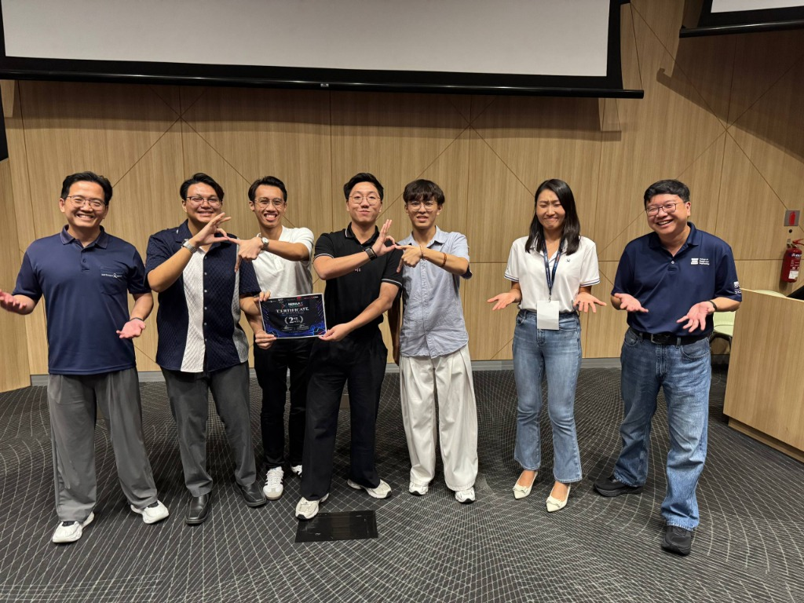
Nebula X Hackathon 2026 · Stage Award Presentation
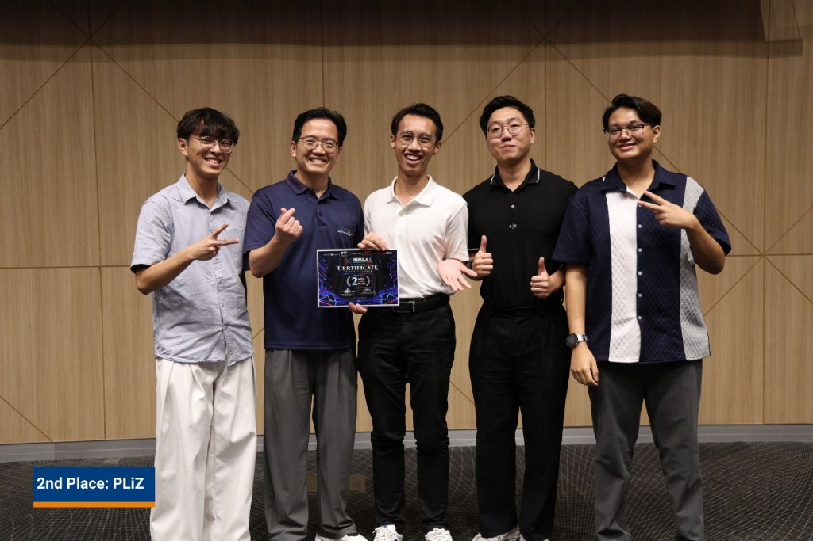
Team PLiZ with 2nd Place Award Certificate & Trophies
PLiZ Live Transit Workspace & Dispatch UI
“Deterministic route prioritization and predictive maintenance telemetry for Singapore's rapid transit rail network.”
LTA & NUS NEBULA X HACKATHON · 2ND PLACE WINNER
// NATIONAL SERVICE · OPERATIONAL READINESS
Frontline Composure. Zero Margin for Error.
Fire & Rescue Specialist (NSF) · May 2023 – May 2025
Bunker gear soaked in sweat, sirens cutting through the night, and high-heat turnouts where second-guessing gets people hurt. Station 441 drilled one reflex into my DNA: stay composed, communicate with absolute clarity, and isolate problems under pressure.
We took that operational discipline straight to high-stakes national stages—cutting through crushed wreckage and deploying live firefighting robotics before tens of thousands at NDP 2024 (TD40), and holding trackside rapid-response standby as Formula 1 cars screamed past at 300 km/h primed for high-speed fire suppression in seconds.
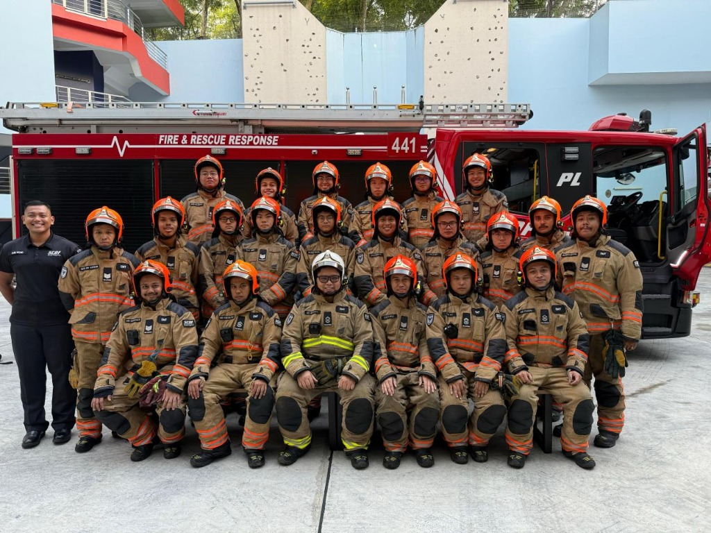
Station 441 · Turnout Response Crew
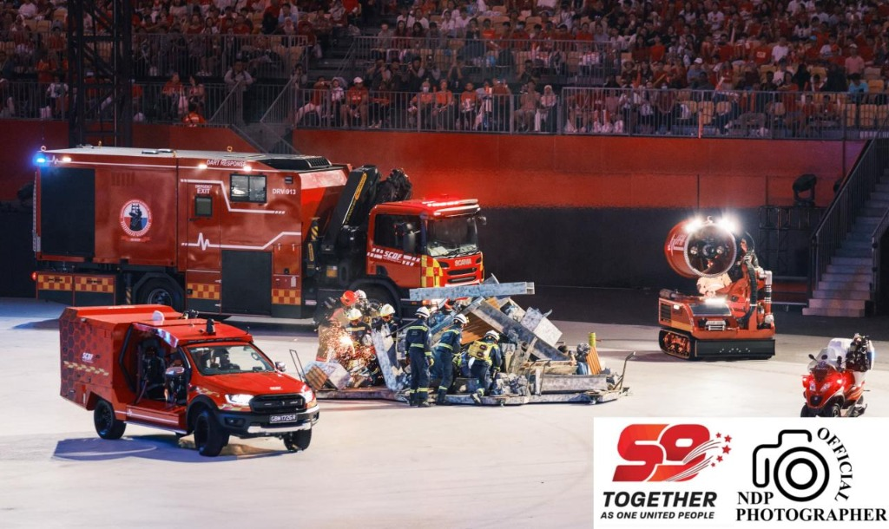
NDP 2024 (Padang) · Tactical Robotics & DART
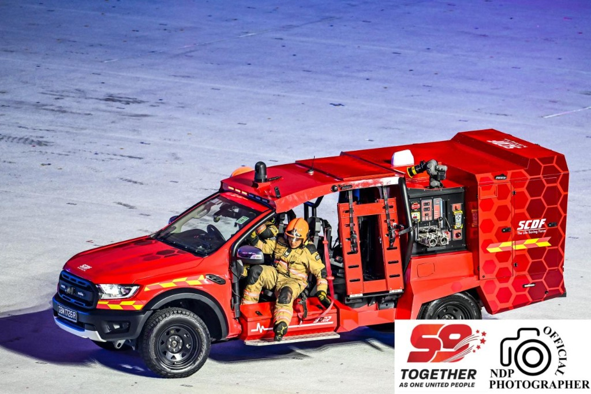
Tactical Response & Vehicle Rescue Drill
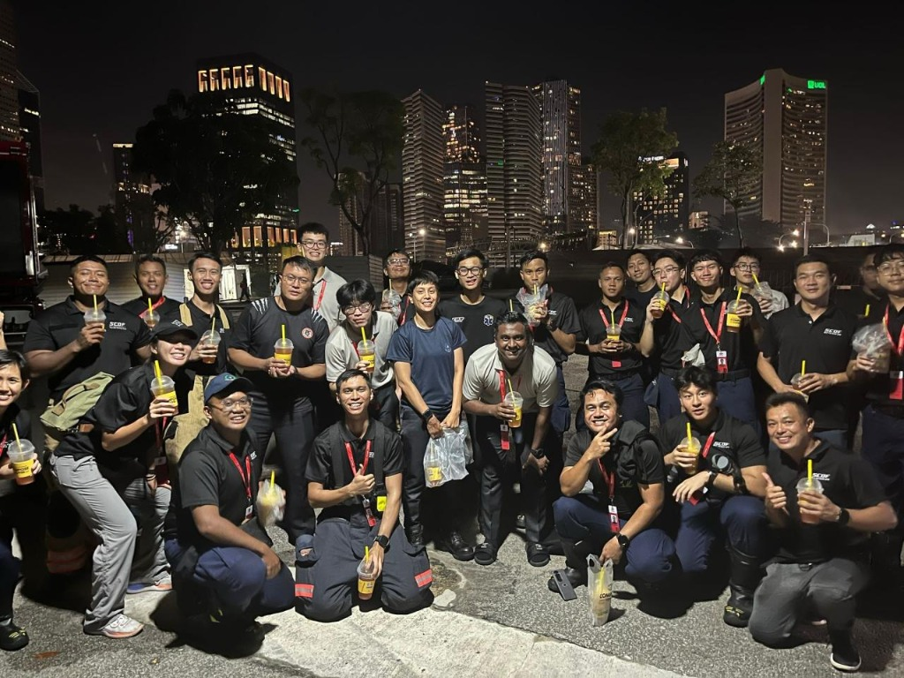
Formula 1 Marina Bay · Trackside Night Standby
// SIT FIRST YEAR EXPERIENCE · INDUCTION
Welcoming the Next Wave of SITizens.
Orientation Group Leader & Facilitator · Sub-alliance Cirrus 15 (C15)
Three months of late-night preparation, zero sleep, and one singular mission: make sure no incoming freshman felt alone stepping into the university grind at SIT. We didn't just run icebreakers—we built Cirrus 15 into a genuine family.
From roaring cheers echoing across the sports complex to late-night debriefs, we pushed shy juniors out of their shells and helped them find their footing. The real testament? Months after orientation wrapped, this crew is still studying together, cracking jokes, and backing each other up across project sprints.
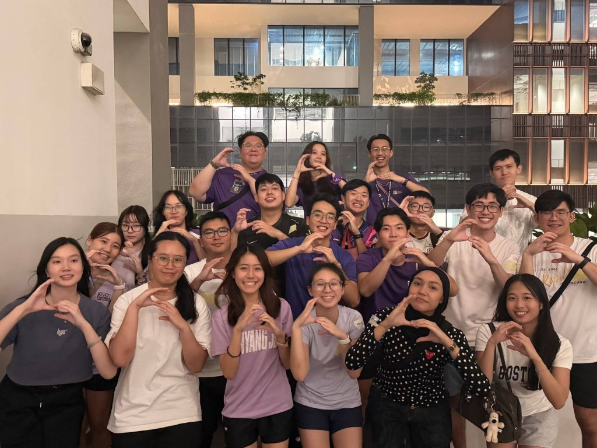
Cirrus 15 (C15) · Freshmen & Facilitators
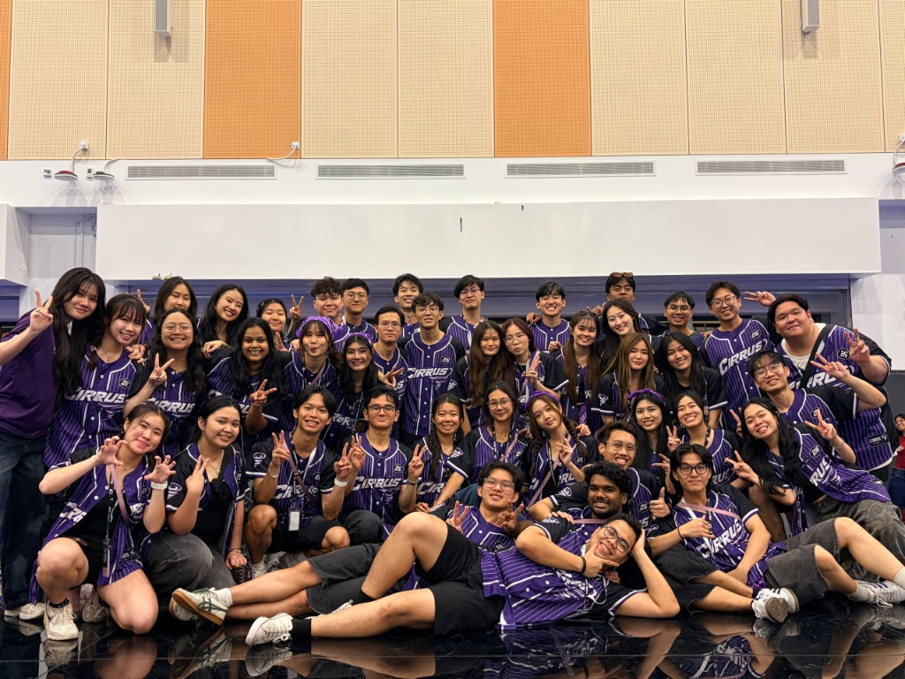
Cirrus Alliance in Full Force
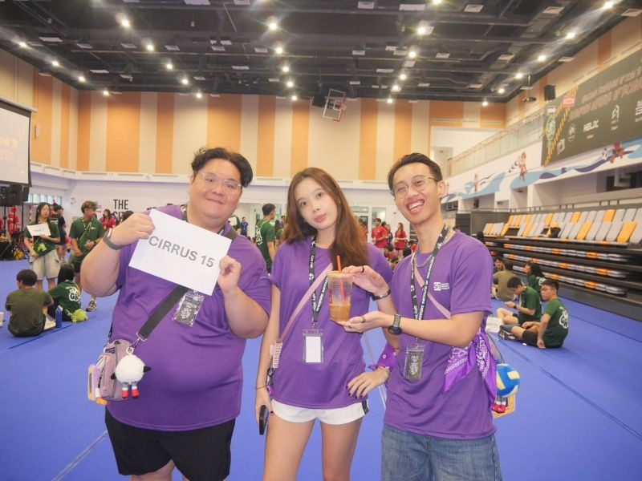
Cirrus 15 Co-Facilitator Leadership Trio
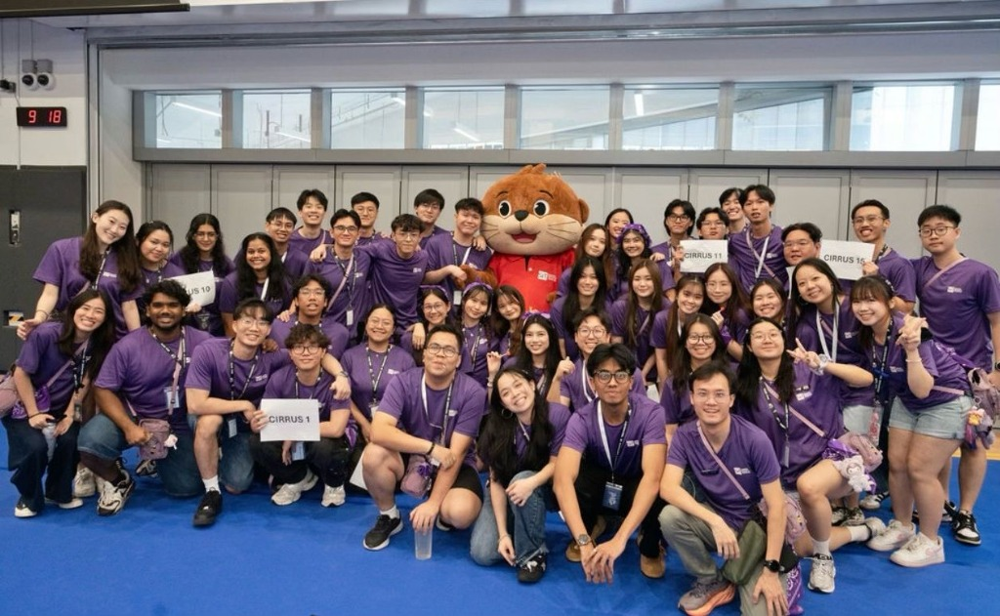
Ottie the Otter & Campus Spirit
// YOUTH MENTORSHIP & ADVOCACY · 2025
No-Fluff Mentorship. Showing Up for Youths.
Youth Mentor · Jan 2025 – Aug 2025
Mentorship isn't about giving stiff lectures from an auditorium stage—it's about showing up consistently, listening without judging, and reminding secondary school youths that they belong in STEM.
Through MENDAKI's PEER programme, we guided cohorts through gritty team trails to build resilience and self-belief. In our GoTech workshops, we put laptops, microcontrollers, and robotics directly into students' hands. Watching a youth who previously claimed "engineering isn't for me" suddenly light up when their custom circuit whirs to life—that is the reason I mentor.
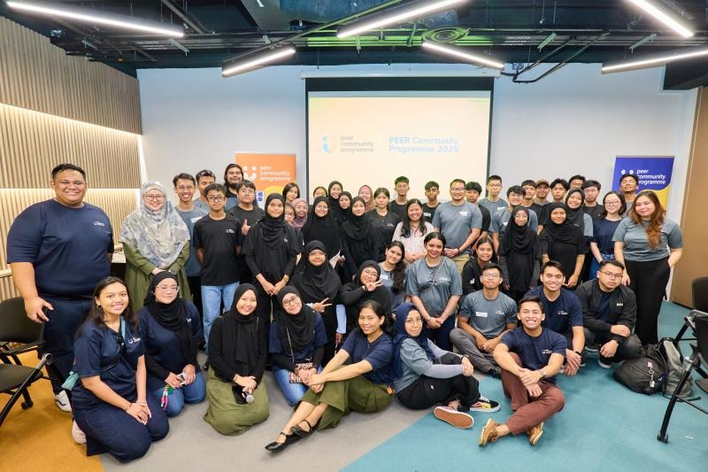
MENDAKI PEER · 2025 Youth Cohort
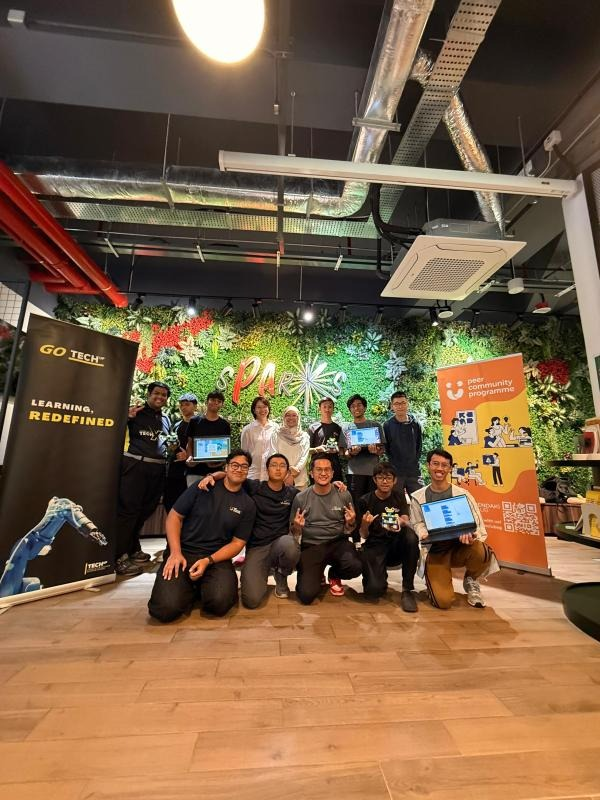
GoTech Series · Hands-On Circuitry & Robotics
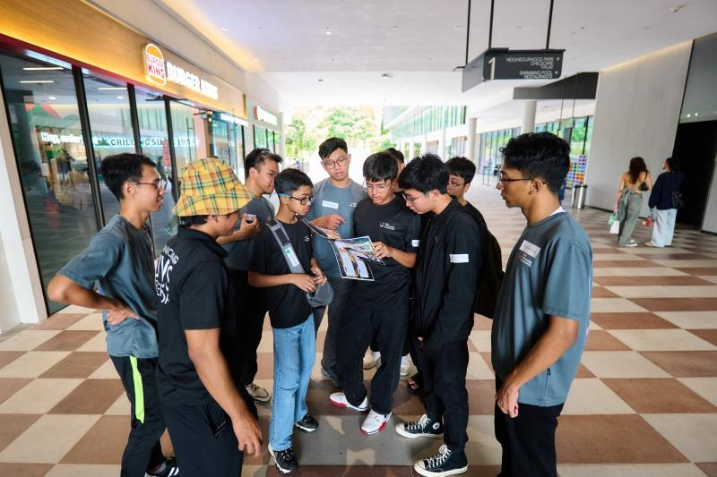
Experiential Team Building & Grit Challenge
“Demystifying tech and proving to youths that engineering isn't a closed club—it's theirs to build.”
MENDAKI CLUB · PEER PROGRAMME 2025
 Agnes AI Hackathon 2026 · 1st Place Champions on Stage
Agnes AI Hackathon 2026 · 1st Place Champions on Stage